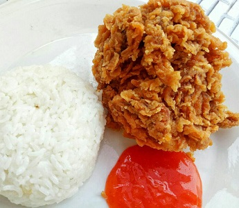
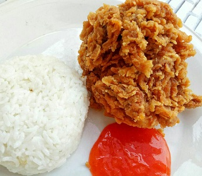
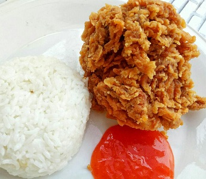
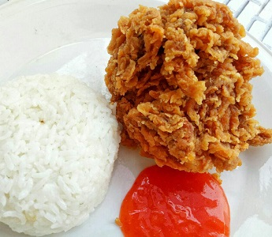

Ayam bakar merupakan salah satu jenis makanan favorit semua orang Indonesia. Potongan paha atau dada ayam, diberi berbagai macam bumbu kaya rempah khas
Indonesia, dan dibakar dengan sempurna. Disajikan dengan berbagai macam sambal dan dinikmati dengan nasi putih panas, wah bikin ngiler!
Nah, kamu semua juga
pasti tau banget jika negara kita mempunyai berbagai macam jenis ayam bakar yang berbeda-beda. Meski mempunyai ciri khas masing-masing, semuanya punya satu
kesamaan; rasanya yang enak banget!!
© 2020 permata hospital. depeloved